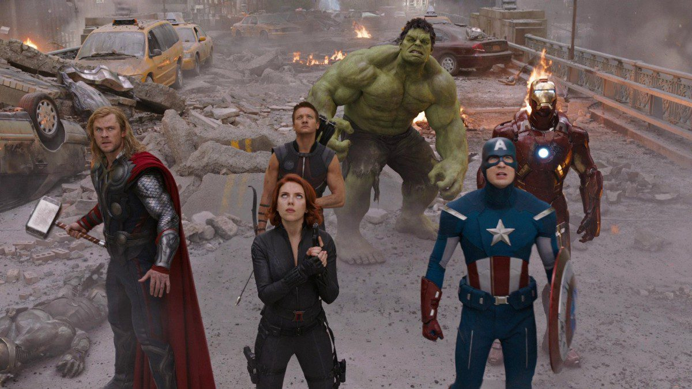

About Hulk
Dr. Bruce Banner, a.k.a. the Hulk, is a famous theoretical physicist, with expertize in nuclear physics and gamma radiation. During a lab experiment with gamma radiation, he was bomabarded with a massive dose of gamma rays, which caused him to mutate into a green monster which came to be known as the Incredible Hulk. Hulk is extremely strong and fueled by rage.
The Avengers
Hulk's characteristics
- He is strong.
- He is angry.
- He is smart and kind.